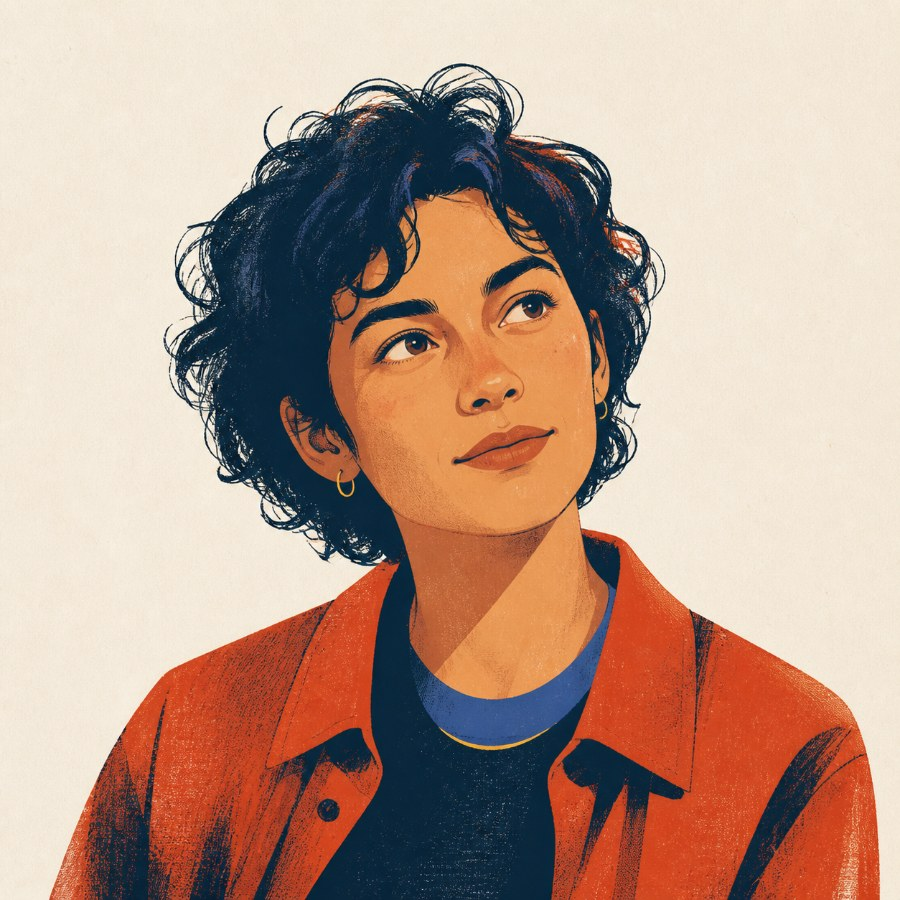

protégéLAB 01
TTEACHER
THE FEYNMAN TEST, WITH CONSEQUENCESIf you know it,
If you know it,
make it click
for Maya.
She is clever, curious, and confidently wrong. Explain one idea until she truly gets it. Then her blind exam tells you whether you did.
▦ YOUR LEARNING MAP
01 / SHE THINKStwo negatives stay negative
02 / YOU EXPLAINshe decides if it lands

M / 01
?
but why?
wait—
◇01Pick the idea
you claim to know
you claim to know
≋02Explain it without
the usual shortcuts
the usual shortcuts
◎03Maya takes
the blind test
the blind test
HER SCOREIS YOURS.
YOU TEACH.MAYA LEARNS.HER SCORE IS YOURS.
10.0 SECONDS · PRODUCT-FAITHFUL SIMULATION · PRESS F FOR FULLSCREEN